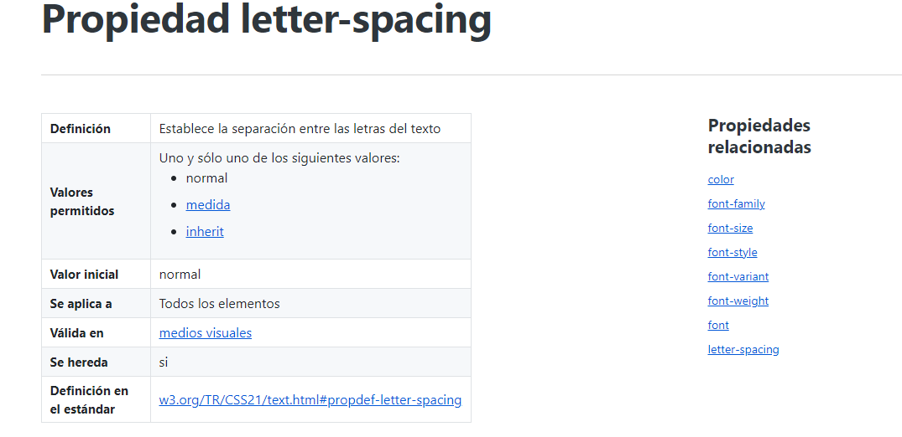
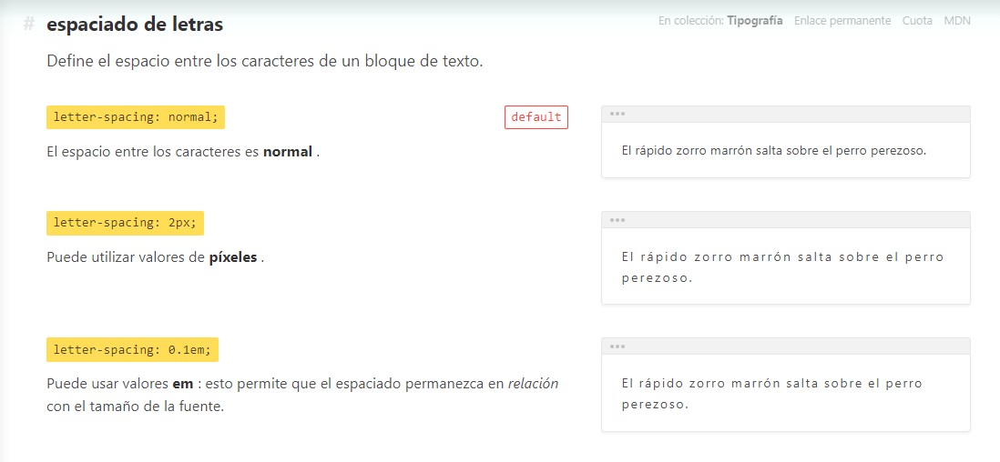

La letter-spacingpropiedad aumenta o disminuye el espacio entre caracteres en un texto.
 La informática, también llamada computación, es la rama de la ciencia que se encarga de estudiar la administración de métodos, técnicas y procesos con el fin de almacenar, procesar y transmitir información y datos en formato digital.